Midnight in Uppsala
I loved the nights in Uppsala. They always seemed
to stretch longer than the clock allowed, and during
the deep winters, they would slip quietly into my days
until the two became indistinguishable.
The nights were cold and dry, making
the city feel barren and desolate. Some evenings
made me anxious, while others were full of chaotic
love. But I realized then, that the
nights were never truly dark; they were
occupied by benevolent lights. They came
in warm glows, greens, blues, and purples, dancing
in the heavens above Gamla
Uppsala, flowing over Fyris
, and shining through the
windows of Domkyrka. I swear
I could feel their warmth against my
skin, even during a harsh
winter. All I had to do was open
my eyes to let them in.
In the realm of the night,
I saw wonders of nature
and the beauty of humanity. Once the city
lights warmed me, I found a
matching peace under the stars.
I wondered about the past through
aeons of galactic lights, and found
shelter in the present with friends
who sought luminous adventures.
What a shame it would have been, to sleep through those nights.

The Lights at Gamla Uppsala
Cycling down Vattholmavägen at
midnight, I watched
them conduct their eternal performance right above us.
Sometimes they retreated to the distant
Northern sky, as if hoping
not to be spotted. Sometimes they would be balls of light shimmering above me. But I always saw them,
because I never stopped searching for the lights.
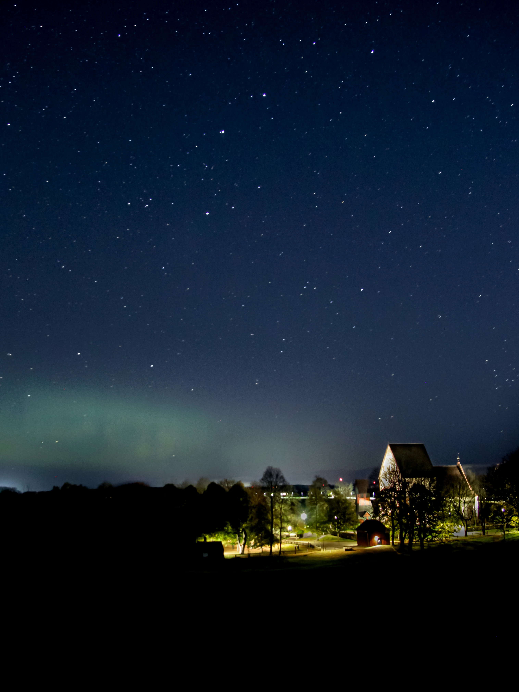
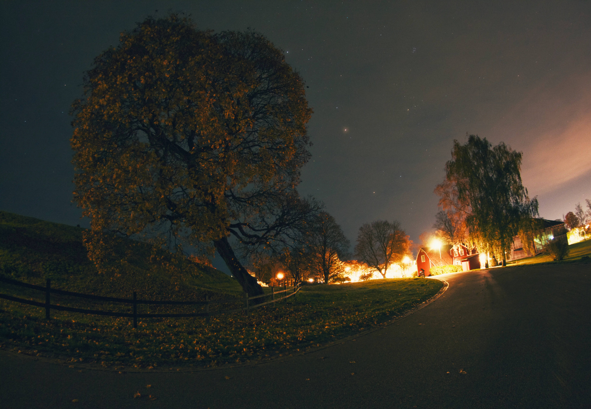
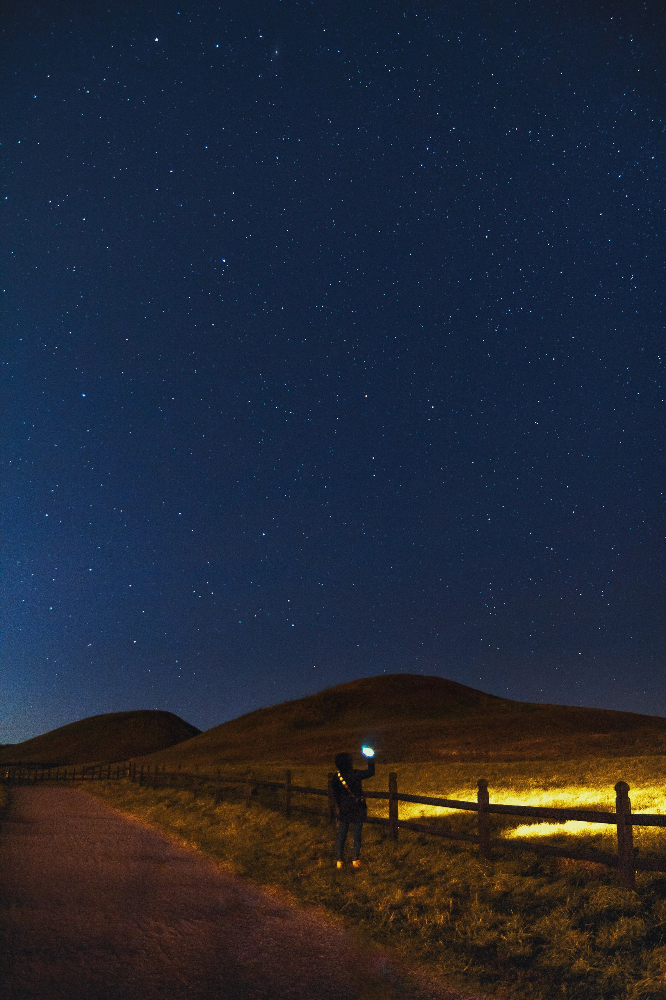
CAmpfire 1
That September, I saw many
new faces.
And once those lights sparked,
they took on a life of their own
and never withered away.
Even as
the embers faded, our lights were always warm.
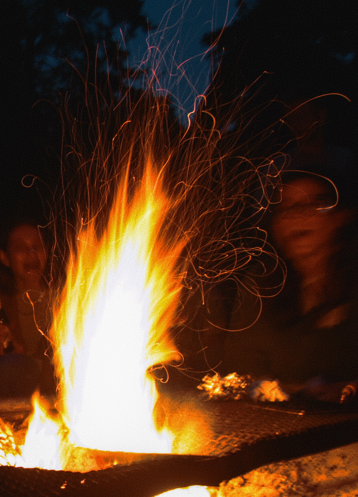
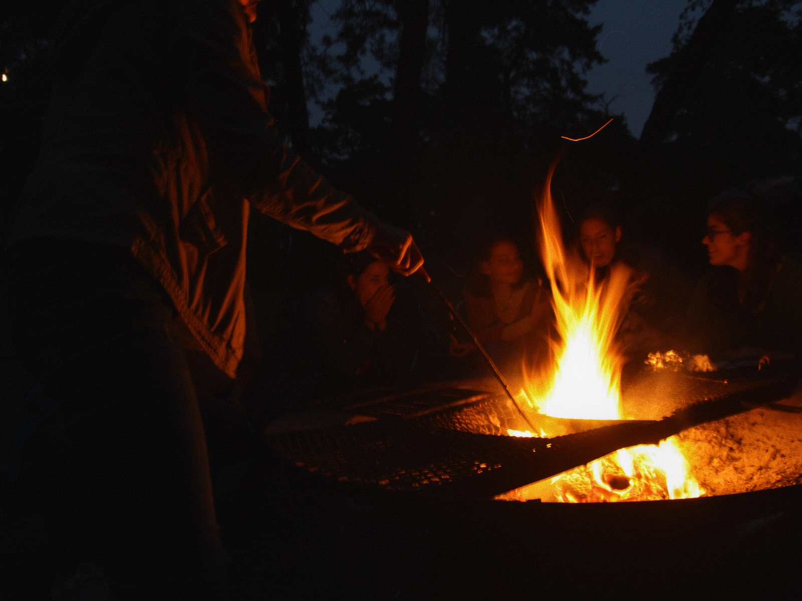
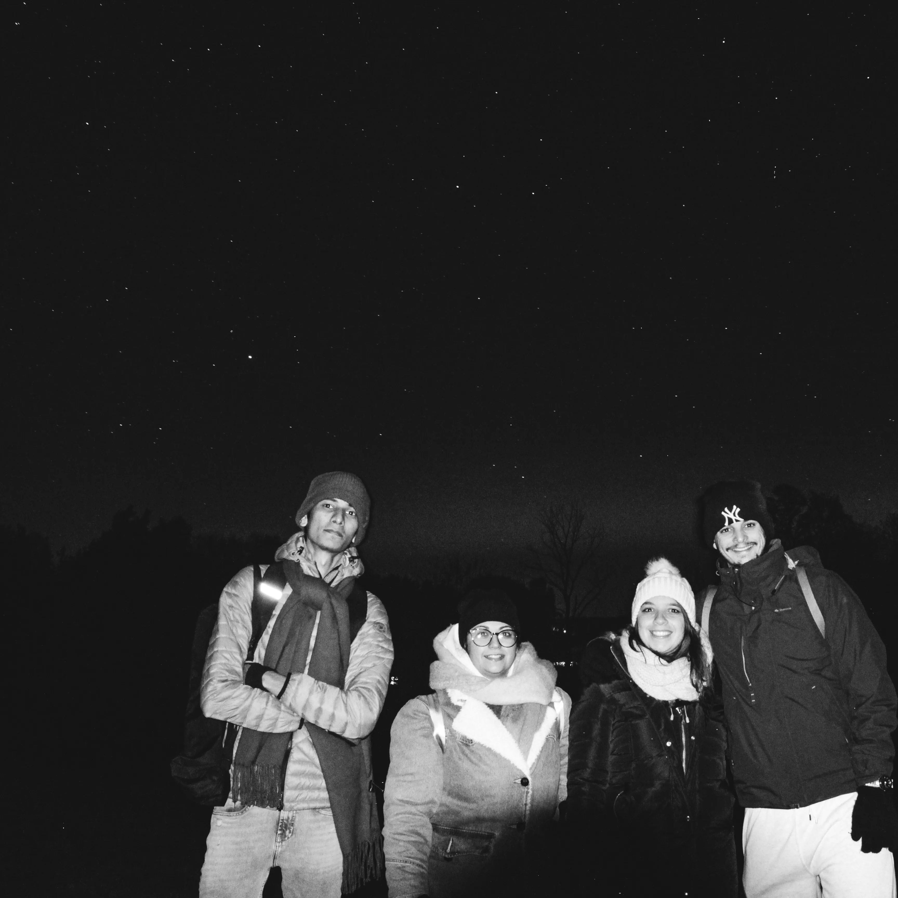
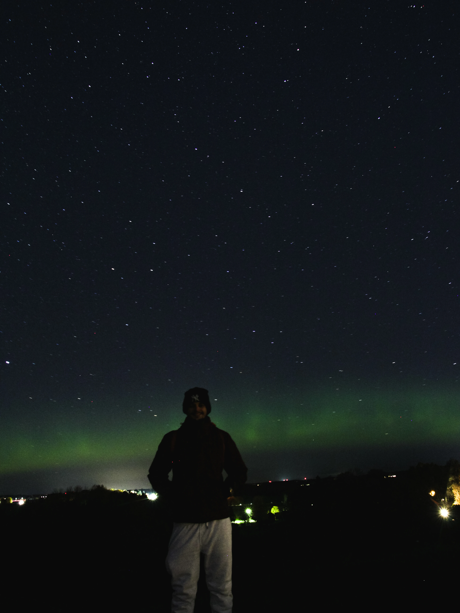
Lightseekers
Uppsala wasn’t dark for us, because
we relentlessly sought the lights.
We had our struggles, of course. We
questioned ourselves on days when
our inner sparks felt too dim.
But like a lens left
exposed to the night sky, we took it all in. We stayed
together, gathering enough shared warmth
to live the time we had.
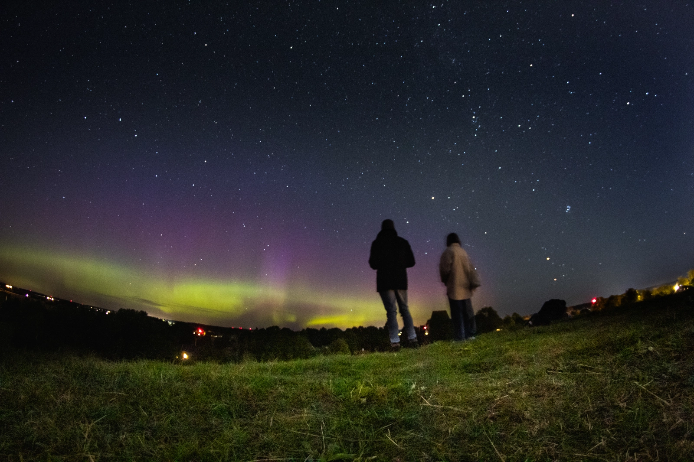
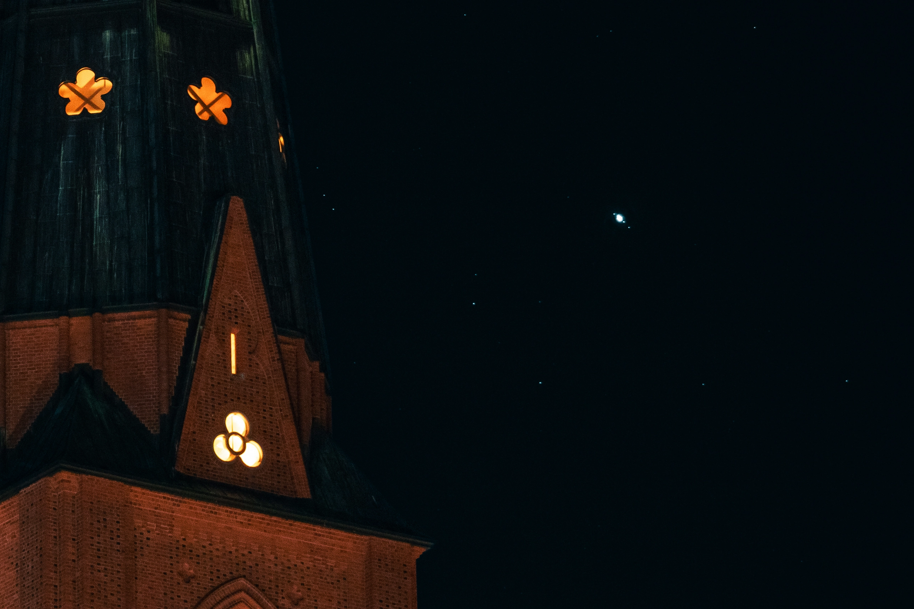
Anush Watches The Hunter
There were nights when my own world
was collapsing,
threatening to pull me into the
dark. But the lights around me always offered some
sanity.
I remember Anush
sitting by my window, her gaze
fixed on the sky as she
watched the Hunter in the
stars. Sometimes all I needed to do
was to keep an open window, and let the lights come in.
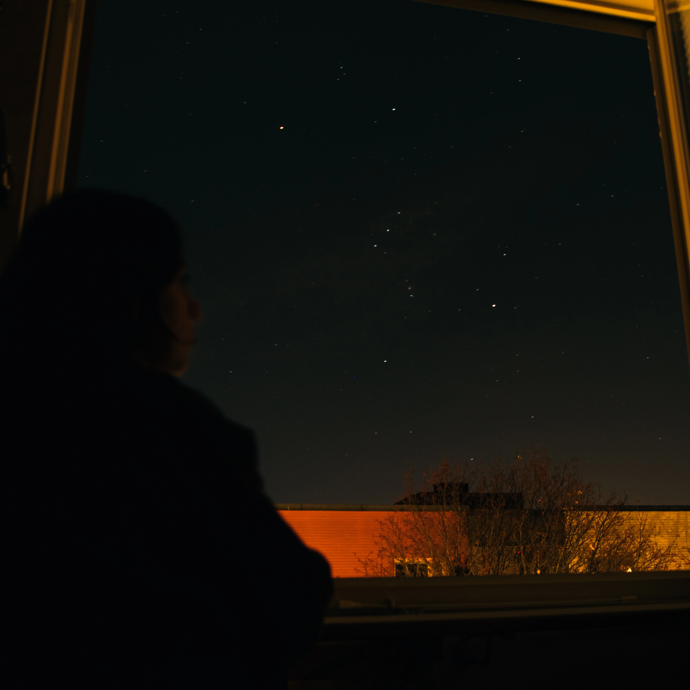
On Fyris
Those lights never came back once we left Uppsala, or at least it feels that way. Looking back, it seems as though that entire celestial performance was exclusively for us, a luminous gift for that specific chapter of our lives. When the time came, we sailed on our boats down Fyris, leaving that familiar glow behind, hoping to find new lights in whatever dark awaited us next.

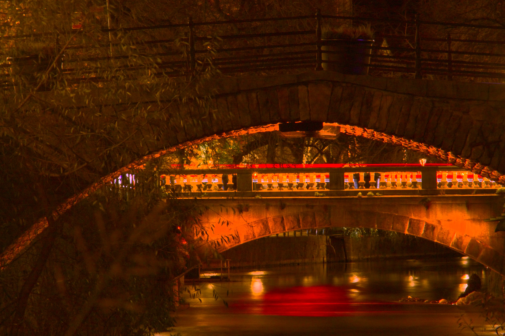